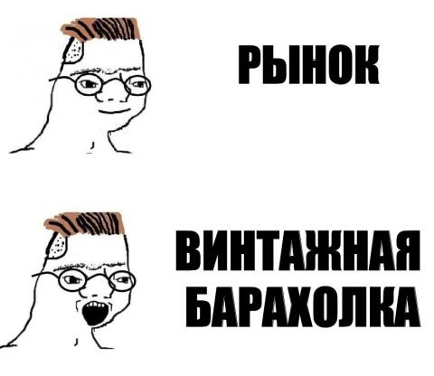
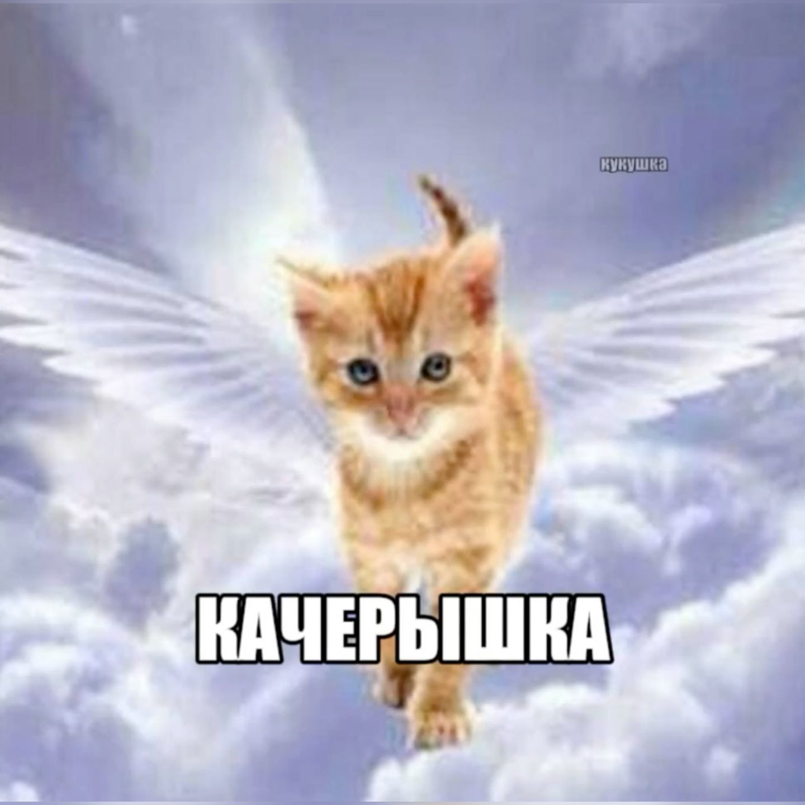
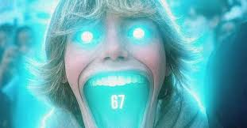

Вселенная Wojak
Думеры, Зумеры, Бумеры, Трейды и Чады. Лица, нарисованные в Paint, стали главным инструментом для выражения любых эмоций и социальных стереотипов нашего времени.
Добро пожаловать в 2020-е. Эпоха, когда мем живет от силы пару дней, а юмор стал настолько многослойным, что его невозможно объяснить маме. Форматы меняются со скоростью света благодаря TikTok и Reels, а картинки намеренно шакалят и искажают. Это время чистого хаоса и анти-дизайна.

Думеры, Зумеры, Бумеры, Трейды и Чады. Лица, нарисованные в Paint, стали главным инструментом для выражения любых эмоций и социальных стереотипов нашего времени.

Мемы без смысла. Картинки с котами в странных ситуациях, пережатое аудио, нелепые 3D-модели. Чем абсурднее и хуже качество, тем смешнее.

Видеомемы стали доминировать. Музыкальные тренды, танцы, бесконечные мэшапы и звуки, которые застревают в голове на недели.